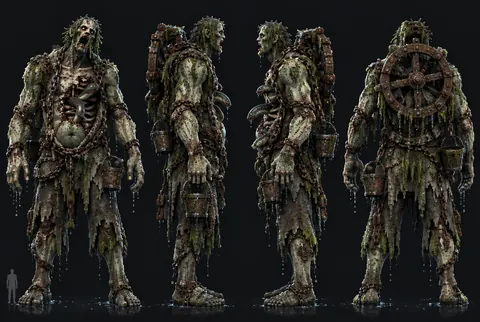
Afogado gigante
Original: Concepts/Characters/chefe_afogado-gigante_ficha.png
Gerado — não edite à mão · fonte: acervo.json · 17 de outubro de 2026
Lightkeeper
105 itens · 105 vigentes · 0 em avaliação · 0 descartadas
Nenhum item com esses filtros.

Original: Concepts/Characters/chefe_afogado-gigante_ficha.png
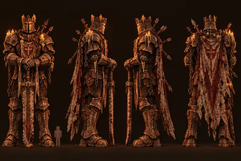
Original: Concepts/Characters/chefe_cavaleiro-morto-vivo_turnaround.png
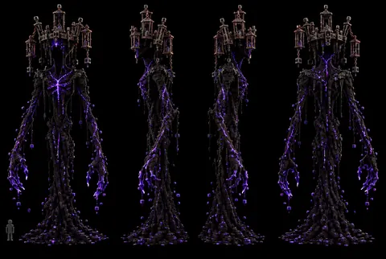
Original: Concepts/Characters/chefe_escuridao-viva_ficha.png
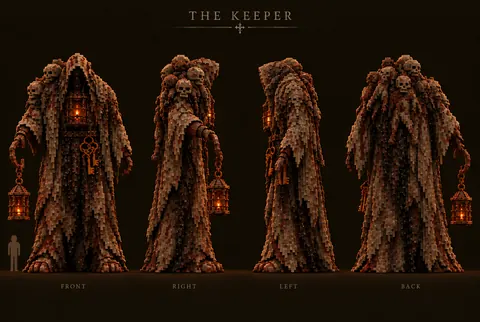
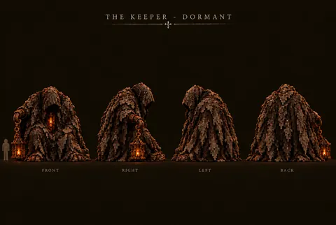
Original: Concepts/Characters/chefe_keeper_turnaround.png, Concepts/Characters/chefe_keeper_turnaround_adormecido.png
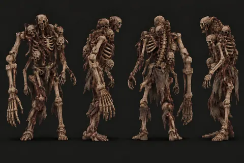
Original: Concepts/Characters/inimigo_abominacao_turnaround.png
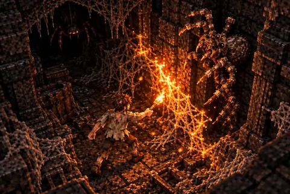
Original: Concepts/Characters/inimigo_aranha-gigante-reacao-a-luz_cena.png
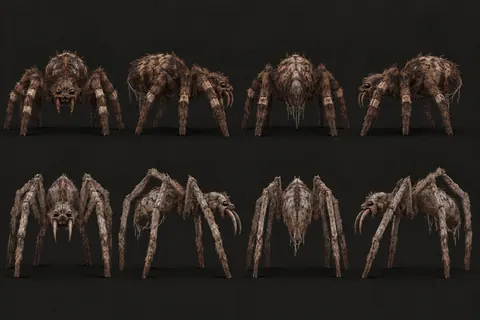
Original: Concepts/Characters/inimigo_aranha-gigante_ficha.png
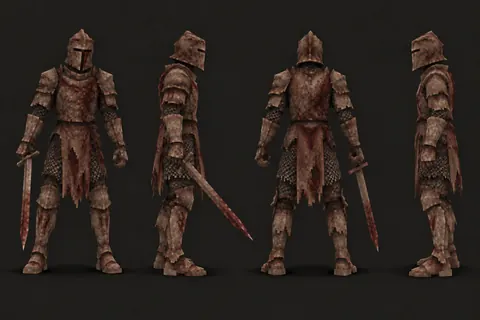
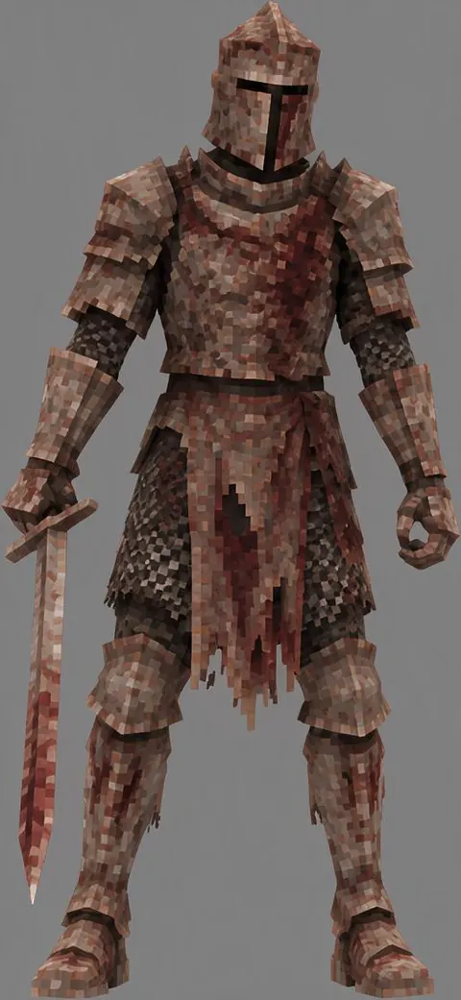
Original: Concepts/Characters/inimigo_cavaleiro-corroido_turnaround.png, Concepts/Characters/inimigo_cavaleiro-corroido_vista-unica.png
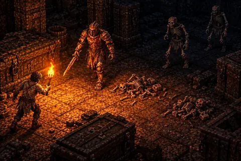
Original: Concepts/Characters/inimigo_cavaleiro-e-esqueletos-reacao-a-luz_cena.png
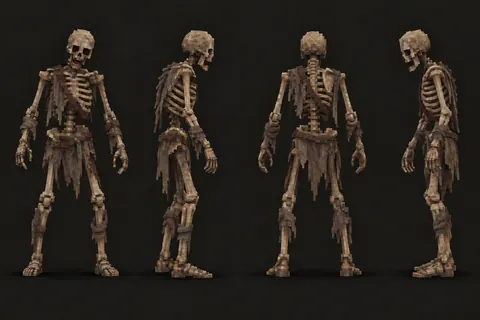
Original: Concepts/Characters/inimigo_esqueleto_turnaround.png
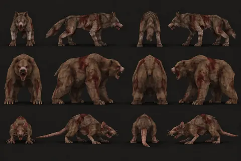
Original: Concepts/Characters/inimigo_fauna-inicial_ficha.png
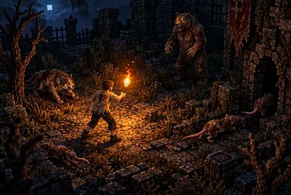
Original: Concepts/Characters/inimigo_fauna-reacao-a-luz_cena.png
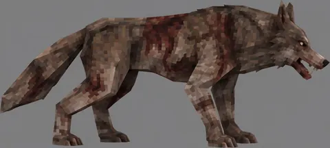
Original: Concepts/Characters/inimigo_lobo_vista-unica.png
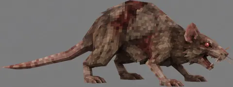
Original: Concepts/Characters/inimigo_rato-gigante_vista-unica.png
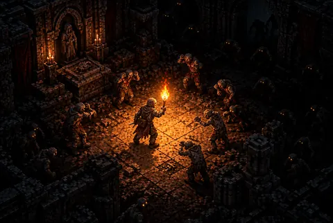
Original: Concepts/Characters/inimigo_reacao-a-luz_cena.png
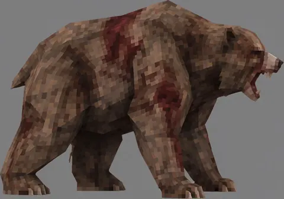
Original: Concepts/Characters/inimigo_urso_vista-unica.png
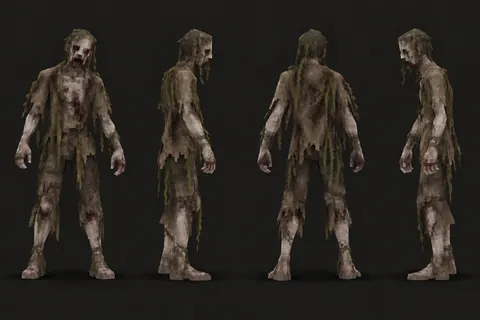
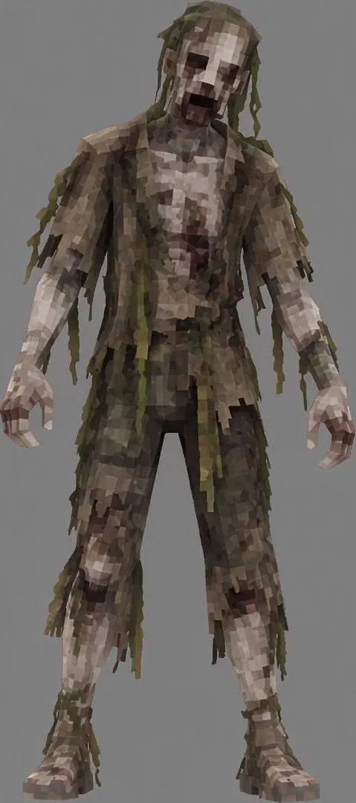
Original: Concepts/Characters/inimigo_zumbi-afogado_turnaround.png, Concepts/Characters/inimigo_zumbi-afogado_vista-unica.png
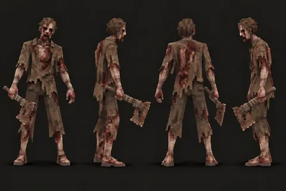
Original: Concepts/Characters/inimigo_zumbi-armado_turnaround.png
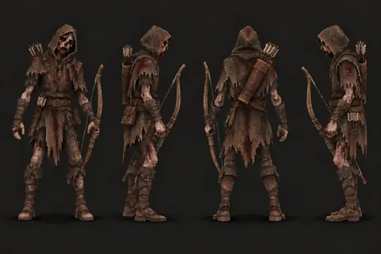
Original: Concepts/Characters/inimigo_zumbi-arqueiro_turnaround.png
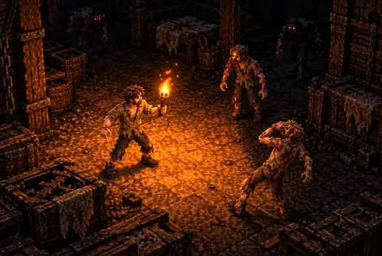
Original: Concepts/Characters/inimigo_zumbi-comum-reacao-a-luz_cena.png
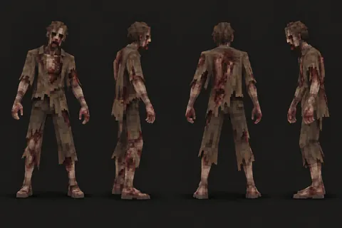
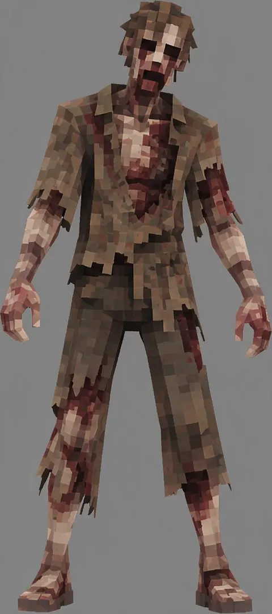
Original: Concepts/Characters/inimigo_zumbi-comum_turnaround.png, Concepts/Characters/inimigo_zumbi-comum_vista-unica.png
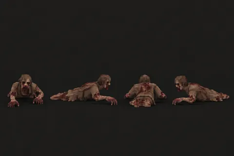
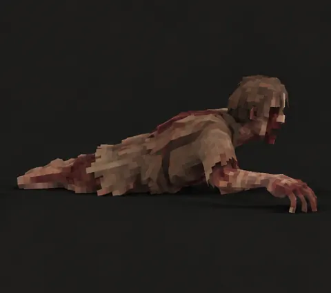
Original: Concepts/Characters/inimigo_zumbi-rastejante_turnaround.png, Concepts/Characters/inimigo_zumbi-rastejante_vista-unica.png
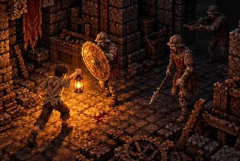
Original: Concepts/Characters/inimigo_zumbi-soldado-reacao-a-luz_cena.png
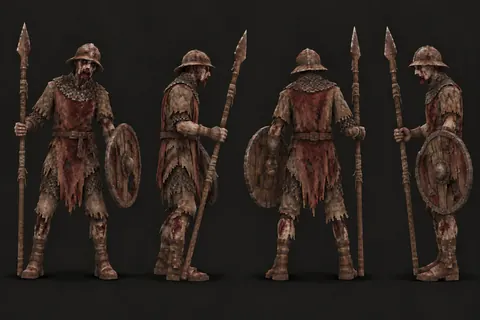
Original: Concepts/Characters/inimigo_zumbi-soldado_turnaround.png
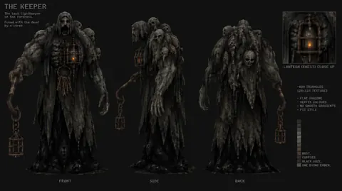
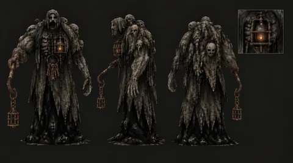
Original: Concepts/Characters/personagem_lightkeeper_ficha_direcao-a.png, Concepts/Characters/personagem_lightkeeper_ficha_versao-limpa.png
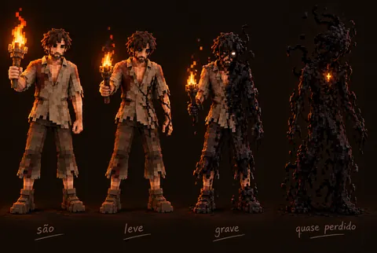
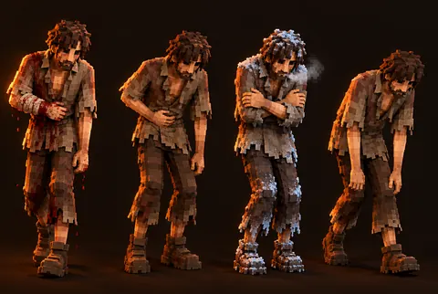
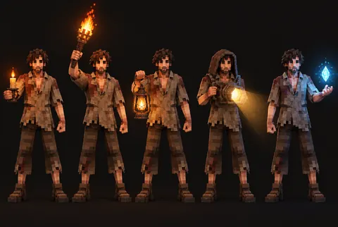
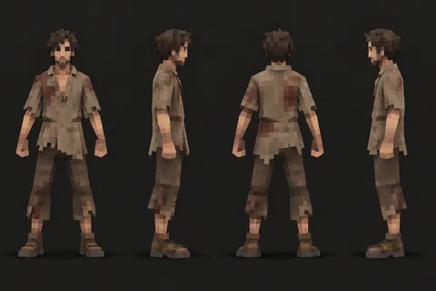
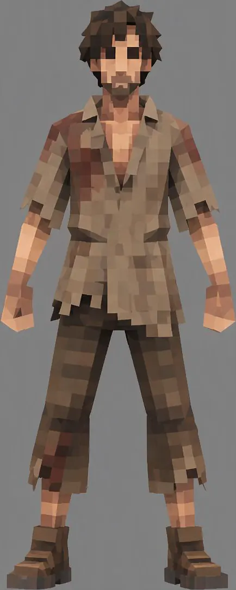
Original: Concepts/Characters/personagem_protagonista_corrupcao_ficha.png, Concepts/Characters/personagem_protagonista_estados_ficha.png, Concepts/Characters/personagem_protagonista_fontes-de-luz_ficha.png, Concepts/Characters/personagem_protagonista_turnaround.png, Concepts/Characters/personagem_protagonista_vista-unica.png
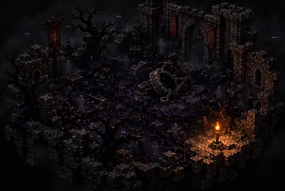
Original: Concepts/Environment/ambiente_patio-corrompido_cena.png
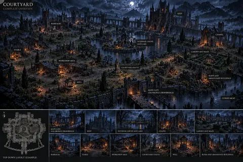
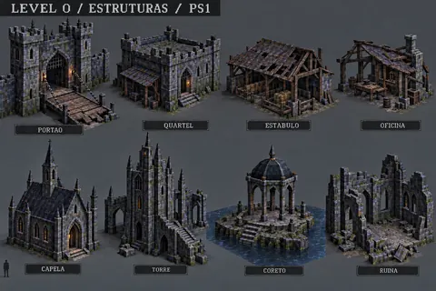
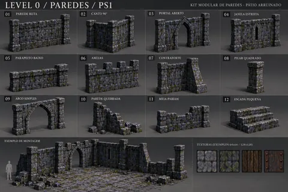
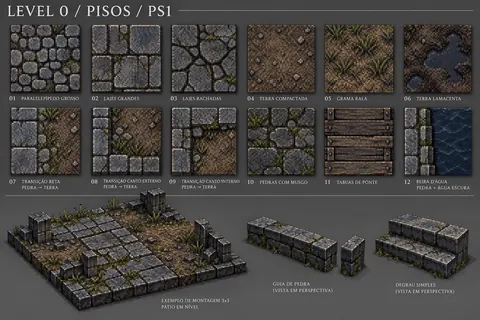
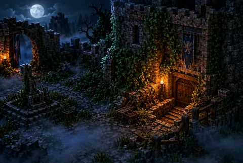
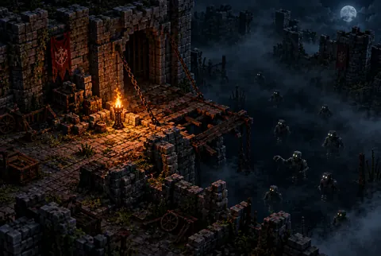
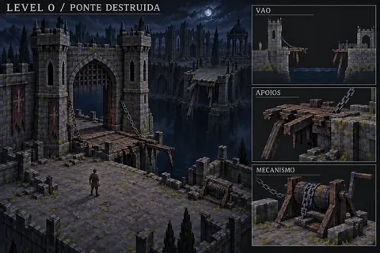
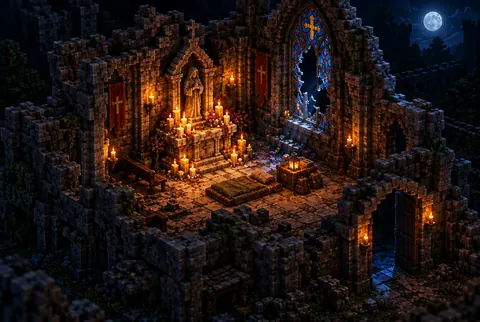
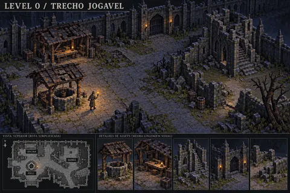
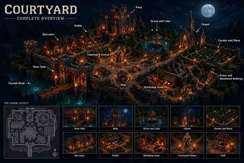
Original: Concepts/Environment/nivel_00_patio.png, Concepts/Environment/nivel_00_patio_catalogo_estruturas.png, Concepts/Environment/nivel_00_patio_catalogo_paredes.png, Concepts/Environment/nivel_00_patio_catalogo_pisos.png, Concepts/Environment/nivel_00_patio_cena_passagem.png, Concepts/Environment/nivel_00_patio_cena_perigo.png, Concepts/Environment/nivel_00_patio_cena_ponte-destruida.png, Concepts/Environment/nivel_00_patio_cena_ponto-seguro.png, Concepts/Environment/nivel_00_patio_cena_trecho-jogavel.png, Concepts/Environment/nivel_00_patio_voxel.png
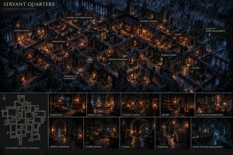
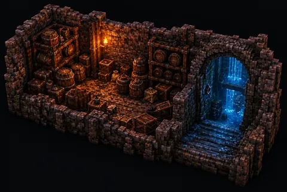
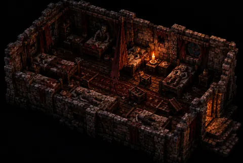
Original: Concepts/Environment/nivel_01_aposentos.png, Concepts/Environment/nivel_01_aposentos_cena_passagem.png, Concepts/Environment/nivel_01_aposentos_cena_perigo.png, Concepts/Environment/nivel_01_aposentos_cena_ponto-seguro.png, Concepts/Environment/nivel_01_aposentos_voxel.png
Original: Concepts/Environment/nivel_02_cisterna.png, Concepts/Environment/nivel_02_cisterna_cena_passagem.png, Concepts/Environment/nivel_02_cisterna_cena_perigo.png, Concepts/Environment/nivel_02_cisterna_cena_ponto-seguro.png, Concepts/Environment/nivel_02_cisterna_voxel.png
Original: Concepts/Environment/nivel_03_pilares.png, Concepts/Environment/nivel_03_pilares_cena_passagem.png, Concepts/Environment/nivel_03_pilares_cena_perigo.png, Concepts/Environment/nivel_03_pilares_cena_ponto-seguro.png, Concepts/Environment/nivel_03_pilares_voxel.png
Original: Concepts/Environment/nivel_04_reservatorio.png, Concepts/Environment/nivel_04_reservatorio_cena_passagem.png, Concepts/Environment/nivel_04_reservatorio_cena_perigo.png, Concepts/Environment/nivel_04_reservatorio_cena_ponto-seguro.png, Concepts/Environment/nivel_04_reservatorio_voxel.png
Original: Concepts/Environment/nivel_05_castelo-inferior.png, Concepts/Environment/nivel_05_castelo-inferior_cena_passagem.png, Concepts/Environment/nivel_05_castelo-inferior_cena_perigo.png, Concepts/Environment/nivel_05_castelo-inferior_cena_ponto-seguro.png, Concepts/Environment/nivel_05_castelo-inferior_voxel.png
Original: Concepts/Environment/nivel_06_criptas.png, Concepts/Environment/nivel_06_criptas_cena_passagem.png, Concepts/Environment/nivel_06_criptas_cena_perigo.png, Concepts/Environment/nivel_06_criptas_cena_ponto-seguro.png, Concepts/Environment/nivel_06_criptas_voxel.png
Original: Concepts/Environment/nivel_07_catacumbas.png, Concepts/Environment/nivel_07_catacumbas_cena_passagem.png, Concepts/Environment/nivel_07_catacumbas_cena_perigo.png, Concepts/Environment/nivel_07_catacumbas_cena_ponto-seguro.png, Concepts/Environment/nivel_07_catacumbas_voxel.png
Original: Concepts/Environment/nivel_08_cavernas.png, Concepts/Environment/nivel_08_cavernas_cena_passagem.png, Concepts/Environment/nivel_08_cavernas_cena_perigo.png, Concepts/Environment/nivel_08_cavernas_cena_ponto-seguro.png, Concepts/Environment/nivel_08_cavernas_voxel.png
Original: Concepts/Environment/nivel_09_profundezas.png, Concepts/Environment/nivel_09_profundezas_cena_passagem.png, Concepts/Environment/nivel_09_profundezas_cena_perigo.png, Concepts/Environment/nivel_09_profundezas_cena_ponto-seguro.png, Concepts/Environment/nivel_09_profundezas_voxel.png
Original: Concepts/Environment/nivel_10_abismo.png, Concepts/Environment/nivel_10_abismo_cena_passagem.png, Concepts/Environment/nivel_10_abismo_cena_perigo.png, Concepts/Environment/nivel_10_abismo_cena_ponto-seguro.png, Concepts/Environment/nivel_10_abismo_voxel.png
Original: Concepts/Environment/props_aguas_catalogo.png
Original: Concepts/Environment/props_castelo_catalogo.png
Original: Concepts/Environment/props_cavernas-corrupcao_catalogo.png
Original: Concepts/Environment/props_criptas-catacumbas_catalogo.png
Original: Concepts/Environment/props_patio-modelagem_ficha_v1.png, Concepts/Environment/props_patio-modelagem_ficha_v2.png
Original: Concepts/Environment/props_patio_catalogo.png
Original: Concepts/Equipment/Armor/equipamento_armadura-de-couro_ficha.png, Concepts/Equipment/Armor/equipamento_armadura-de-couro_turnaround.png
Original: Concepts/Equipment/Armor/equipamento_armadura-de-sucata_ficha.png, Concepts/Equipment/Armor/equipamento_armadura-de-sucata_turnaround.png
Original: Concepts/Equipment/Armor/equipamento_traje-nomade_ficha.png, Concepts/Equipment/Armor/equipamento_traje-nomade_referencia-b.png, Concepts/Equipment/Armor/equipamento_traje-nomade_turnaround.png
Original: Concepts/Equipment/Tools/equipamento_cantis_ficha.png
Original: Concepts/Equipment/Tools/equipamento_mochila-de-couro_ficha.png
Original: Concepts/Equipment/Tools/equipamento_mochila-de-sucata_ficha.png
Original: Concepts/Equipment/Tools/equipamento_mochila-de-tecido_aberta_ficha.png, Concepts/Equipment/Tools/equipamento_mochila-de-tecido_ficha.png
Original: Concepts/Equipment/Tools/equipamento_mochila_aberta_esboco.png, Concepts/Equipment/Tools/equipamento_mochila_aberta_esboco-anotado.png
Original: Concepts/Equipment/Tools/ferramenta_arcaica_ficha.png
Original: Concepts/Equipment/Tools/ferramenta_enferrujadas_ficha.png
Original: Concepts/Equipment/Tools/ferramenta_pedra_ficha.png
Original: Concepts/Equipment/Tools/ferramenta_sucata_ficha.png
Original: Concepts/Equipment/Tools/ferramenta_tiers_1e3_referencia.png
Original: Concepts/Lighting/luz_comparativo-fontes_cena.png
Original: Concepts/Lighting/luz_emergencia_catalogo.png
Original: Concepts/Lighting/luz_estacionaria_catalogo.png
Original: Concepts/Lighting/luz_estudo-patio_cena.png
Original: Concepts/Lighting/luz_farois-direcionais_catalogo.png, Concepts/Lighting/luz_farois-direcionais_catalogo_estagios.png
Original: Concepts/Lighting/luz_lampioes_catalogo.png, Concepts/Lighting/luz_lampioes_catalogo_estagios.png
Original: Concepts/Lighting/luz_luz-magica_catalogo.png, Concepts/Lighting/luz_luz-magica_catalogo_estagios.png
Original: Concepts/Lighting/luz_raios-de-alcance_cena.png
Original: Concepts/Lighting/luz_tocha-vs-lampiao_cena.png
Original: Concepts/Lighting/luz_tochas_catalogo.png, Concepts/Lighting/luz_tochas_catalogo_estagios.png
Original: Concepts/Lighting/luz_velas_catalogo.png, Concepts/Lighting/luz_velas_catalogo_estagios.png
Original: Concepts/Items/item_alimentos-crus_catalogo.png
Original: Concepts/Items/item_bebidas_catalogo.png
Original: Concepts/Items/item_combustiveis_catalogo.png
Original: Concepts/Items/item_corrompidos_catalogo.png
Original: Concepts/Items/item_medicos_catalogo.png
Original: Concepts/Items/item_notas-do-lightkeeper_catalogo.png
Original: Concepts/Items/item_recursos-naturais_ficha.png
Original: Concepts/Items/item_refeicoes_catalogo.png
Original: Concepts/Items/item_residuo-magico_ficha.png
Original: Concepts/Items/item_sucata_catalogo.png
Original: Concepts/Workstations/bancada_bancadas_catalogo.png
Original: Concepts/Workstations/bancada_curtume-progressao_catalogo.png
Original: Concepts/Workstations/bancada_curtume_cena.png
Original: Concepts/Workstations/bancada_geral-progressao_catalogo.png
Original: Concepts/Workstations/bancada_geral_cena.png
Original: Concepts/Workstations/bancada_sucata-progressao_catalogo.png
Original: Concepts/Workstations/bancada_sucata_cena.png
Original: Concepts/Workstations/bancada_tecelagem-progressao_catalogo.png
Original: Concepts/Workstations/bancada_tecelagem_cena.png
Original: Concepts/Construction/construcao_abrigo-ruinas_cena.png
Original: Concepts/Construction/construcao_pecas_catalogo_improvisado.png
Original: Concepts/Construction/construcao_refugio-cripta_cena.png
Original: Concepts/Construction/construcao_santuario_cena_abandonado.png, Concepts/Construction/construcao_santuario_cena_antes-depois.png, Concepts/Construction/construcao_santuario_cena_consolidado.png, Concepts/Construction/construcao_santuario_cena_primeira-chama.png
Original: Concepts/Lanterns/lanterna_lanternas-magicas_catalogo_ativadas.png, Concepts/Lanterns/lanterna_lanternas-magicas_catalogo_dormentes.png
Original: Concepts/UI/ui_hud_tela.png
Original: Concepts/UI/ui_inventario-diegetico_tela.png
Original: Concepts/UI/ui_inventario_tela.png
Original: Concepts/UI/ui_livro-receitas_tela.png
Original: Concepts/UI/ui_mapa-diario_tela.png
Original: Concepts/UI/ui_menus_ficha.png
Original: Concepts/UI/ui_morte_tela.png
Original: Concepts/UI/ui_sono_tela.png
As versões 1 a 4 e os loops em WAV ficam em Audio/Musica/ no repositório.
Original: Audio/Musica/musica_menu-principal_v5.mp3
Original: Concepts/KeyArt/keyart_cercado-na-nevoa_cena.png
Original: Concepts/KeyArt/keyart_keeper_cena.png
Original: Concepts/KeyArt/keyart_ultima-vela_cena_oficial.png
Original: Docs/Marco1/capturas/01_inicio.png, Docs/Marco1/capturas/02_andando.png, Docs/Marco1/capturas/05_ataque_leve.png, Docs/Marco1/capturas/10_bloqueio_andando.png, Docs/Marco1/capturas/04_camera_girada_zoom.png, Docs/Marco1/capturas/03_correndo.png, Docs/Marco1/capturas/07_interagir.png, Docs/Marco1/capturas/08_mochila.png, Docs/Marco1/capturas/06_parede_translucida.png, Docs/Marco1/capturas/09_pausa.png
Toque numa imagem para ampliar e baixar a prévia. O original fica no repositório do jogo, no caminho indicado em cada item.